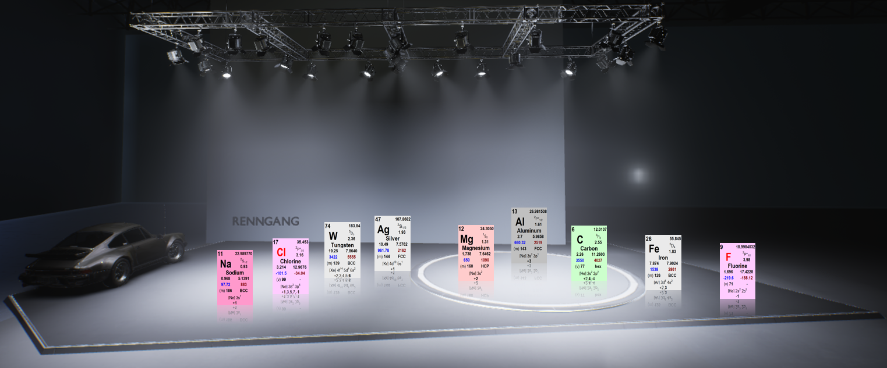
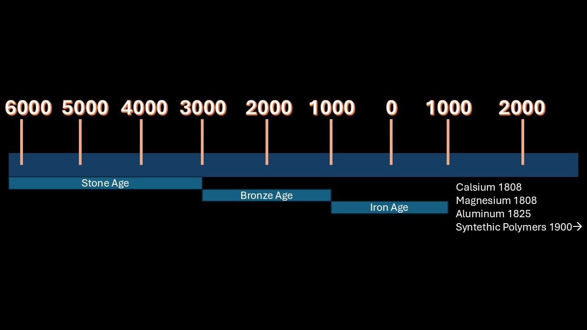
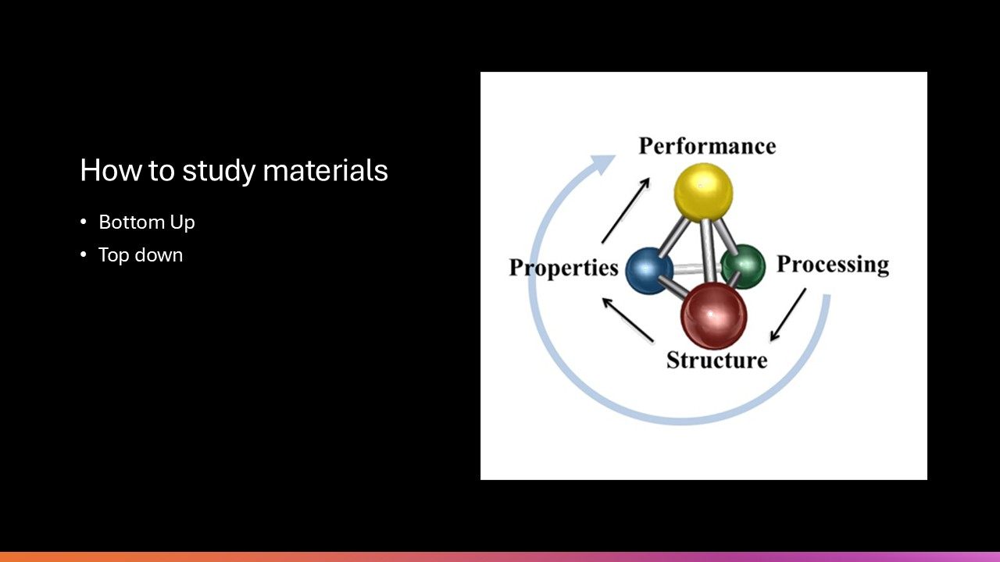
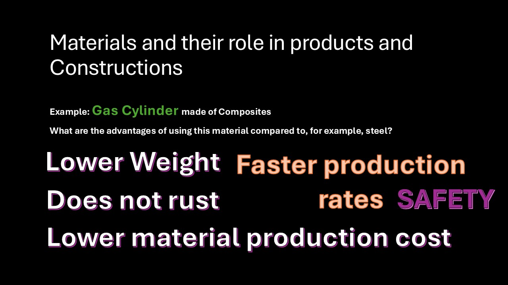

The science behind your Porsche Parts

Why is Material Science important?
When developing a product, materials are essential. In the past, the selection of materials was limited, whereas today, we have access to a vast range of options. This makes it crucial to have knowledge about materials when working in fields such as manufacturing and production. Understanding materials allows engineers to select the most suitable ones for specific applications, optimizing performance, durability, cost-efficiency, and sustainability. Material knowledge is fundamental in engineering disciplines ranging from mechanical and civil engineering to electronics and biomedical fields.
The Development of Materials Through History
The Stone Age lasted to approximately 2000 to 4000 years before Christ. Although several other materials were known, such as gold, they played a minor role compared to stone, primarily because they were rarer. Copper was also known, but it was only when people learned to alloy it with tin to create bronze that its full potential was truly realized. Silver has also been known for at least 4000 years before Christ. Like gold, copper, and silver, it can be found in metallic form in nature. Other materials, however, do not occur as metals but must be extracted from ores. Tin was discovered slightly later. After this, the Bronze Age began when it was discovered that mixing copper and tin produced bronze. This period lasted until around 1000 BCE. Around this time, a significant discovery was made: by burning coal, heating iron ore, and allowing it to react with carbon monoxide, metallic iron could be produced. Around 1000 BCE, people figured out how to extract iron, which marked the beginning of the Iron Age. The Iron Age lasted until approximately 700 CE, followed by the Middle Ages and the Viking Age. Later, other important material discoveries were made, such as zinc, which was successfully extracted in the 15th/16th century. In the 18th century, lightweight metals began to emerge, and for the first time, calcium, magnesium, and aluminum were isolated. It was not until 1825 that aluminum was recognized as a metal. We will cover aluminum in much more detail later in this course, but it is actually the most abundant metal in the Earth's crust—or, more precisely, the most abundant metallic element in the Earth's crust. In that sense, it may seem surprising that aluminum was not extracted until 1825. However, this is because aluminum does not occur naturally as a pure metal; instead, it is bound in various minerals within the Earth's crust. To produce metallic aluminum, different chemical processes are required. Then came the 20th century, when synthetic polymers—synthetic plastic materials—were developed. Polymers are a broader category that includes plastics. After World War II, the use of plastics expanded significantly, as it was discovered that plastic materials could be used in a wide range of household products. Modern materials now consist of a combination of many different substances.
How do we study materials? We use a bottom-up approach, but it is also possible to apply a top-down approach. The bottom-up approach begins at the smallest relevant level (atoms) with fundamental theories on how materials are formed through various mechanisms and processes. It examines how atoms bond into different structures and how these structures influence properties that collectively determine material performance. Alternatively, a top-down approach can be used. This method starts with the known performance of materials—essentially the optimal combination of properties for a given purpose—and then investigates what governs these properties at the atomic, micro, and macro levels (i.e., structures). Additionally, it explores how these structures are formed (and can be controlled) through production and processing techniques.
